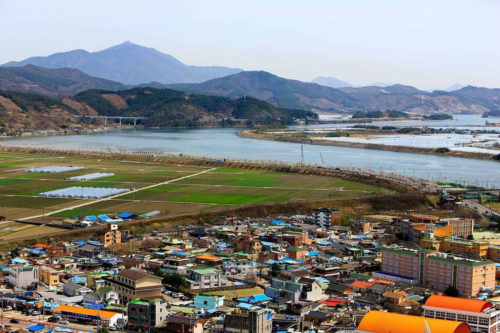

경남 햇빛소득마을 41곳 중 26곳 전력망 연결 막혀…도의회 "변전소 확충 2030년 이후, 주민 소득 언제 나오나"

1·2차 선정 마을 33곳이 조건부…경남도 "전력망 우선 연결·ESS 국비 지원 정부에 건의"
경남에서 햇빛소득마을로 뽑힌 41개 마을 가운데 26곳이 전력망에 연결할 길이 없어, 발전소를 지어도 전기를 언제부터 팔 수 있을지 모르는 상태인 것으로 드러났다. 경남도의회 경제환경위원회가 6일 연 경남도 산업국 행정사무감사에서, 1·2차 공모로 선정된 41곳 중 33곳이 전력망 연결과 서류 보완 등을 조건으로 한 조건부 선정이었다는 점이 지적됐다. 신종철 도의원(국민의힘·산청)은 함양·산청·하동·합천 등 서부 경남의 변전소 확충이 2030년 이후로 잡혀 있어 사업이 오래 늦어질 수 있다며, 마을별 전력망 연결 가능 시점과 구체적인 추진계획을 내놓으라고 요구했다. 이에 권대혁 경남도 에너지산업과장은 "햇빛소득마을이 전력망에 우선 연결될 수 있도록 하고 ESS 설치를 국비로 지원하는 방안 등을 정부에 건의하고 있다"고 답했다. 햇빛소득마을은 마을이 태양광 발전소를 세워 얻은 수익을 주민이 나누는 정부 공모사업으로, 강원·전남 등 다른 지역에서도 선정 마을 상당수가 계통 문제로 조건부 판정을 받았다.
시민에너지 관점
41곳 중 26곳이 전기를 내보낼 길부터 막혔다면, 공모 선정은 주민에게 소득이 아니라 기다림만 안긴 셈이다. 독일은 재생에너지법(EEG)에서 계통운영자에게 재생에너지 설비를 우선 접속하고 필요하면 망을 늘릴 의무를 지워, 접속 문제를 발전사업자가 아닌 망 운영자의 책임으로 정했다. 변전소를 새로 짓는 데 시간이 걸리는 것은 사실이지만, 마을 단위 저장장치와 한산한 시간대 접속을 묶으면 지금 있는 망 안에서도 작은 주민 발전소부터 숨통을 틔울 수 있다. 정부와 한전은 12월 시행되는 소규모 공익 발전 우선접속 기준에 햇빛소득마을을 분명히 넣고, 마을별 연결 시점을 공개해 주민이 계획을 세울 수 있게 해야 한다.
출처: 경남도민일보 2026-11-08 김해수 원문 보기
창간 전 시험 발행 기사입니다.
慶尚南道のひかり所得村41カ所のうち26カ所が電力網接続できず…道議会「変電所拡充は2030年以降、住民の所得はいつ出るのか」
1・2次選定の33カ所が条件付き…慶尚南道「電力網への優先接続・ESSの国費支援を政府に建議」
慶尚南道でひかり所得村(햇빛소득마을)に選ばれた41の村のうち26カ所が電力網に接続する手立てがなく、発電所を建てても電気をいつから売れるか分からない状態にあることが明らかになった。慶尚南道議会経済環境委員会が6日に開いた道産業局の行政事務監査で、1・2次公募で選ばれた41カ所のうち33カ所が、電力網接続や書類補完などを条件とする条件付き選定だったことが指摘された。申鍾哲(シン・ジョンチョル)道議員(国民の力・山清)は、咸陽・山清・河東・陜川など慶尚南道西部の変電所拡充が2030年以降に予定されており事業が長く遅れかねないとして、村ごとの電力網接続の見通し時期と具体的な推進計画を示すよう求めた。これに対し、権大赫(クォン・デヒョク)道エネルギー産業課長は「ひかり所得村が電力網に優先接続されるようにし、ESS設置を国費で支援する案などを政府に建議している」と答えた。ひかり所得村は、村が太陽光発電所を建てて得た収益を住民が分け合う政府の公募事業で、江原・全南など他の地域でも選定村の多くが系統の問題で条件付きの判定を受けている。
市民エネルギーの視点
41カ所のうち26カ所が電気を送り出す道から塞がれているなら、公募の選定は住民に所得ではなく待ち時間だけをもたらしたことになる。ドイツは再生可能エネルギー法(EEG)で系統運用者に再エネ設備の優先接続と、必要なら送配電網を増強する義務を課し、接続問題を発電事業者ではなく系統運用者の責任と定めた。変電所の新設に時間がかかるのは事実だが、村単位の蓄電設備と空いている時間帯の接続を組み合わせれば、今ある電力網の中でも小さな住民発電所から道を開くことができる。政府と韓国電力は、12月に施行される小規模公益発電の優先接続基準にひかり所得村を明確に含め、村ごとの接続時期を公開して住民が計画を立てられるようにすべきだ。
出典: 경남도민일보 2026-11-08 김해수 原文を読む
創刊前の試験発行記事です。
庆尚南道41个阳光收入村中26个无法接入电网…道议会："变电站扩建要到2030年以后，居民收入何时才有"
第一、二批入选村庄中33个为附条件入选…庆南道："已向政府建议电网优先接入、由国费支持储能设施"
韩国庆尚南道入选"阳光收入村"(햇빛소득마을)的41个村庄中，有26个无法接入电网，即使建成发电站，也不知道何时才能开始售电。庆尚南道议会经济环境委员会6日对道产业局进行行政事务监察时指出，通过第一、二批公开征集入选的41个村庄中，有33个属于以电网接入、补充材料等为条件的附条件入选。道议员申钟哲(国民力量党，山清)表示，咸阳、山清、河东、陕川等庆南西部地区的变电站扩建排在2030年以后，项目可能长期拖延，要求道政府提出各村可接入电网的时间和具体推进计划。对此，庆南道能源产业科科长权大赫回应称，"正在向政府建议让阳光收入村优先接入电网，并以国费支持储能系统(ESS)的安装"。阳光收入村是由村庄建设太阳能电站、居民分享收益的政府公开征集项目，江原、全南等其他地区也有大量入选村庄因电网问题被判为附条件入选。
市民能源视角
41个村庄中有26个连送电的通道都被堵住，意味着入选给居民带来的不是收入，而只是等待。德国在《可再生能源法》(EEG)中规定电网运营商必须优先接入可再生能源设施，必要时扩建电网，把接入问题定为电网运营商而非发电方的责任。新建变电站确实需要时间，但若把村级储能与低谷时段接入结合起来，即使在现有电网内，也能先为小型居民电站打开通道。韩国政府和韩国电力公社应把阳光收入村明确纳入12月施行的小规模公益发电优先接入标准，并公开各村接入时间，让居民能够制定计划。
来源: 경남도민일보 2026-11-08 김해수 查看原文
本文为创刊前试发行文章。
26 of South Gyeongsang's 41 Sunlight Income Villages Cannot Connect to the Grid; Councillor Warns Substation Upgrades Will Not Come Before 2030
33 villages from the first two rounds were selected on conditions; the province says it has asked Seoul for priority grid access and state-funded storage
Twenty-six of the 41 villages chosen in South Gyeongsang Province for the sunlight income village (햇빛소득마을) programme have no way to connect to the power grid, leaving them unsure when they could sell electricity even if they build their solar plants. At an administrative audit of the provincial industry bureau held by the provincial council's Economy and Environment Committee on 6 November, it emerged that 33 of the 41 villages selected in the first two rounds had been chosen on conditions such as securing a grid connection or supplementing their documents. Councillor Shin Jong-cheol (People Power Party, Sancheong) said substation upgrades in the western part of the province, including Hamyang, Sancheong, Hadong and Hapcheon, are scheduled for after 2030 and the projects could be delayed for years, and he called for a connection timeline and a concrete plan for each village. Kwon Dae-hyeok, head of the province's energy industry division, replied that the province is "proposing to the government that sunlight income villages be connected to the grid first and that ESS installation be funded by the state." Under the government programme, villages build solar plants and share the income among residents, and many villages selected in other regions such as Gangwon and South Jeolla have also been given conditional approval because of grid constraints.
Citizen Energy View
If 26 of 41 villages are blocked from even sending their power out, selection has brought residents a wait rather than an income. Germany's Renewable Energy Sources Act (EEG) obliges grid operators to connect renewable plants as a priority and to expand the grid where needed, placing responsibility for connection on the network operator rather than the generator. Building new substations does take time, but combining village-level storage with off-peak connection can open the way for small community plants even within today's grid. The government and KEPCO should explicitly include sunlight income villages in the priority-connection rules for small public-interest generation that take effect in December, and publish a connection date for each village so residents can plan.
Source: 경남도민일보 2026-11-08 김해수 Read the original
This article was published during the trial period before launch.